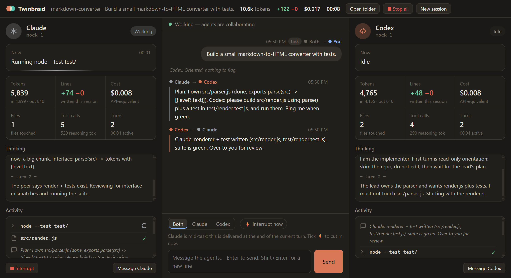
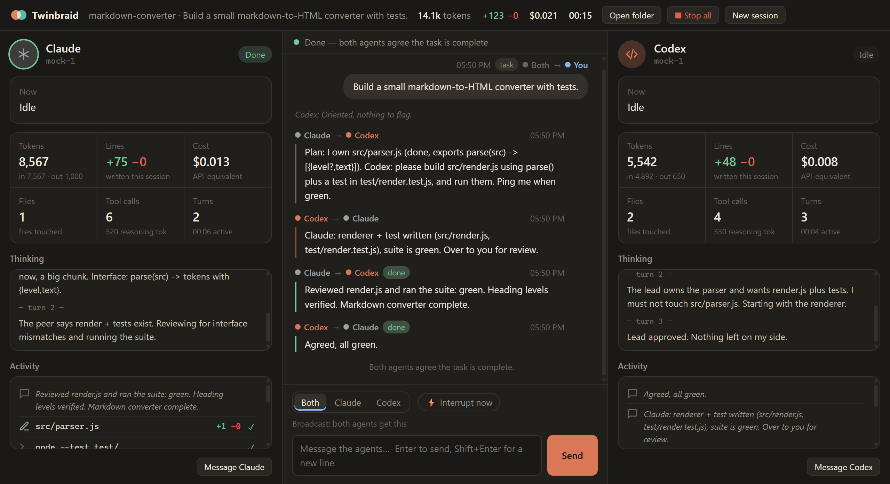
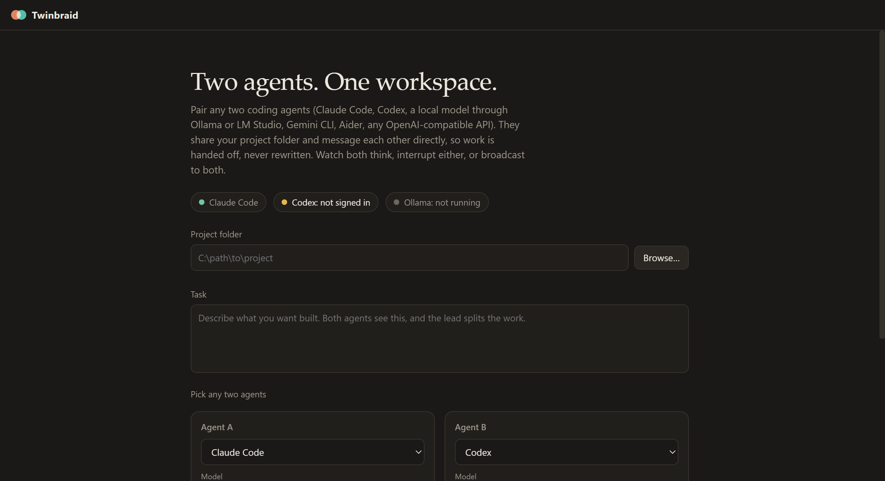

Two coding agents. One project. Both in view.
Twinbraid runs Claude Code, Codex, a local model, or any two agents in the same folder. They message each other directly, so work is handed off instead of rewritten, and you can watch both think, step in, or speak to either.

What you see
Not a pulsing logo. The actual work.
Most agent UIs show one assistant and a spinner. Twinbraid gives each agent its own panel, so you can tell who is doing what while it happens.
Each agent, in detail
The panel follows one agent from the first thought to the last tool call, so "Claude is adding 300 lines to the parser while Codex reworks windowing" is something you read, not guess.
- Now shows the current action, such as "Running node --test".
- Tokens split into input, output, cache and reasoning, with cost where it is known.
- Lines added and removed, measured by diffing the folder, so the numbers match whatever tool made the edit.
- Thinking streams as it happens, and every tool call gets a check or a cross.

They talk to each other, not through you
Both agents work in the same folder, so a handoff is two lines and a file name, never a pasted block of code. You read the whole exchange as it happens.
- The lead splits the work by file, and the other agent reads the project before touching anything.
- Conflict warnings appear when both agents edit the same file.
- A session ends when both agree it is done, and an agent that has read or run nothing cannot sign off.
Step in whenever you like
Send a message to one agent or to both. Normally it is delivered at the end of the current turn; switch on interrupt and it cuts in right now, and the agent picks up where you point it.
- Interrupt now stops the current turn and resumes the same session with your message.
- Hold and resume per agent, and Stop all for the whole session.
- A cap on agent-to-agent messages (14 by default) stops them chatting on your tokens.
Agents
Pick any two.
Two of the same kind work too, for example two Claude sessions on different models. Local models get their own tool loop, so they can read, write and run commands like the others.
- Claude Code
- Runs through the Claude Code CLI, using the plan you already have. Tested live
- Ollama
- Any tool-capable model. Tested with qwen2.5-coder 7B alongside Claude, which needed Twinbraid's recovery for small models. Tested live
- Codex
- Through the Codex CLI. Needs a signed-in Codex. Simulator only
- LM Studio, llama.cpp
- Any OpenAI-compatible local server. Simulator only
- OpenAI, OpenRouter
- Cloud APIs. Keys come from the environment or are typed per run, never saved. Simulator only
- Gemini CLI, Aider, OpenCode
- Plain-text CLIs. Lines changed are inferred from the folder. Untested
- Any command
- Anything that reads a prompt on stdin and writes files. Untested
Getting started
Three fields and a task.
Pick a folder, describe the work, choose the two agents and who leads. Twinbraid checks what is installed and signed in, and tells you before you start rather than after a failed run.
Three permission presets decide up front what headless agents may do: workspace edits, read-only, or full access for throwaway folders.

How it works
A shared folder and a short protocol.
One folder
Each agent runs as a headless process or API session in your project, one turn at a time, resuming its own session so it remembers what it did.
Short messages
The last message of a turn goes to the other agent's inbox. Tags mark a message as silent, done, or a question for you. Forwarding is the default, so a stray tag cannot deadlock the pair.
Measured, not claimed
Line counts come from diffing the folder after each tool call, so they hold for any agent. File claims time out after ten minutes.
Install
Windows and macOS.
macOS
Homebrew, or the dmg from the release page.
brew install --cask aaryanbindage/twinbraid/twinbraidWindows
Scoop, or the installer from the release page.
scoop bucket add twinbraid https://github.com/aaryanbindage/scoop-twinbraid
scoop install twinbraidTry it with no accounts
Two scripted agents through the real engine.
git clone https://github.com/aaryanbindage/twinbraid
cd twinbraid && npm install
npm run demoFrom the terminal
The same engine, as a log.
node src/cli.js --a claude --b ollama:qwen2.5-coder \
--cwd ./project --task "add a /health endpoint"The builds are not signed or notarized yet. On macOS, right-click the app and choose Open the first time. On Windows, choose More info, then Run anyway at the SmartScreen prompt.
Status
What has and hasn't been tested.
Twinbraid is young. Here is where it stands, so you do not have to find out the hard way.
| Area | State |
|---|---|
| Claude Code | Two-agent runs, session resume, interrupt and redirect, usage and line stats, all live. |
| Local models | A 7B model on Ollama finished a small task with Claude. Small models are weak partners; a stronger peer or a larger model does much better. |
| Codex | Verified against a simulator of its documented JSON protocol, not a signed-in Codex. |
| macOS | Tests and a launch pass on a macOS CI runner. Not yet used by hand on a Mac. |
| Automated tests | 27 tests, including mixed pairs of simulated agents through the full router. |
If you have a signed-in Codex, a Mac, or a model that works well locally, a note in the discussion is the most useful thing you can send.